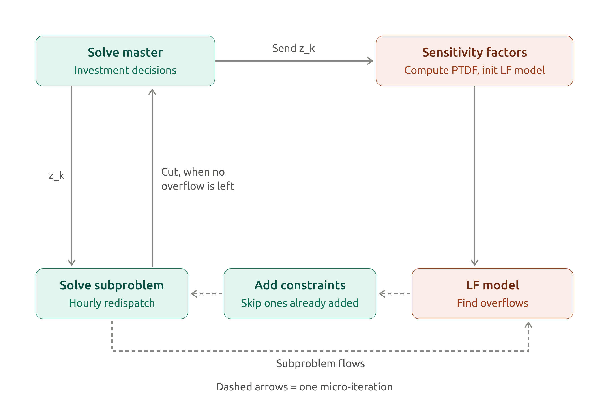
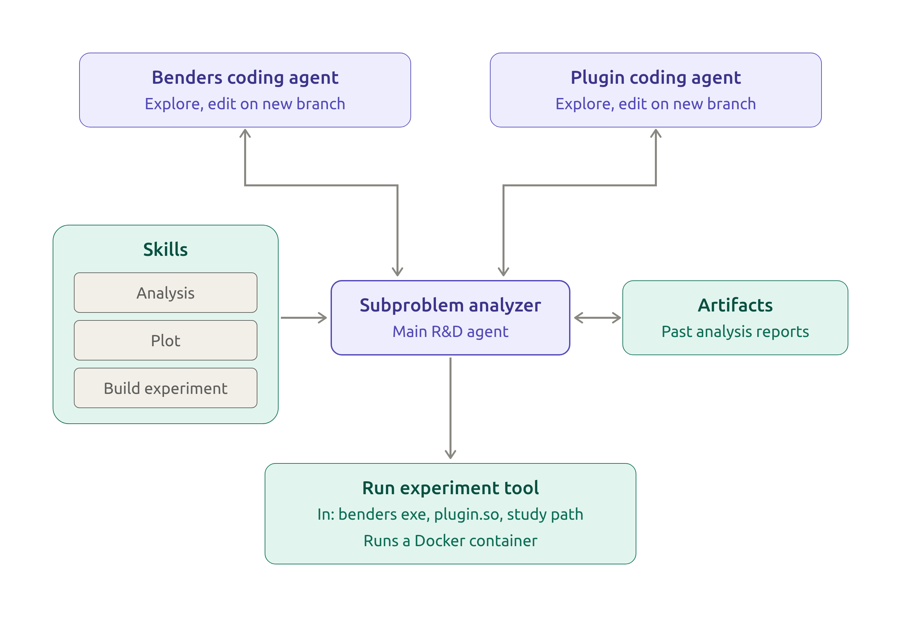

Accelerating R&D with Agents¶
Use case: studying security-constrained redispatch subproblems in Benders decomposition.
Context¶
Antares-Xpansion is a transmission expansion planning tool built on Benders decomposition. We use it to study how the electrical grid should grow. We consider a set of candidate lines \(Z\) and the operating cost \(\theta_h\) of each hour \(h\). The objective is:
where the first term is the investment cost of the chosen lines and the second is the total operating cost.
Benders decomposition splits this problem into two parts:
- a master problem (mixed-integer linear) that decides which lines to build;
- a set of subproblems, one per hour, that compute the redispatch and its operating cost for the chosen grid.
Subproblems and the micro-iteration mechanism¶
The subproblems are security-constrained redispatch problems. At the optimum, most of their constraints, especially the flow constraints, are not binding. We use this with a micro-iteration mechanism. We start from a relaxed problem that keeps only the generation-unit constraints. Then we add flow constraints step by step, following the mechanism below:

Where AI comes in¶
This approach gave a large speed-up for the whole Benders decomposition. But our implementation added several hyperparameters and design choices that could be made differently. Examples are how many constraints to add at each step, which violated flows to pick first, and when to stop. Tuning them means running many experiments and analysing the metrics to find ideas that improve performance further. These ideas often come from knowledge of grid modelling and linear optimization.
To speed up this work, we built an agent harness. It designs and runs the experiments, collects the metrics, and helps us read the results.
Defining the metrics¶
Metrics we track¶
Our goal is to reduce the total Benders run time by cutting the cumulative time spent solving subproblems at each iteration.
For this, we track the following for every subproblem at every Benders iteration:
- the number of micro-iterations;
- the cumulative time spent in micro-iterations;
- the share of N-K and K constraints added at each micro-iteration.
We also compare added constraints across two dimensions:
- Between subproblems (across hours): which added constraints are common, and which of them are active at the optimum. The aim is to find heuristics that let us solve one hour faster by reusing the solution found for a previous hour.
- Across iterations (same subproblem): which constraints added at iteration \(k\) are added again, or are active, at iteration \(k+1\). This tells us whether it is worth warm-starting a subproblem at iteration \(k+1\) by injecting the constraints added at iteration \(k\) from the start.
Together, these metrics give the agent the context it needs to reason about the experiments it runs (or that we run). It can then analyse the results, find useful insights, and support us with deeper knowledge and, in some cases, decisions.
The agent¶

Sources of truth¶
The code involved in this study is split across three independent repositories:
- The Benders decomposition code. This is the code behind the Benders executable. It is fully model-agnostic and works as a general-purpose Benders decomposition framework.
- The micro-iteration plugin. This is an external library that plugs into the Benders
decomposition through callbacks and implements our micro-iteration logic. It has four
hyperparameters:
max_added_constraints: the maximum number of violated constraints added at each micro-iteration;add_N_first: a boolean. If true, at a given micro-iteration we add only the N overflow constraints for a line;tol_N: the tolerance used to detect overflow on N constraints;tol_N_K: the tolerance used to detect overflow on N-K constraints.
- The study repository. This folder holds the MPS files for the master problem and the subproblems. It always includes a JSON file with all the hyperparameters of the Benders algorithm.
Subagents¶
For this, the R&D agent has two coding subagents, one for each repository. Each subagent has two roles:
- Explore: the R&D agent gives the subagent a specific exploration task, and the subagent returns clear feedback.
- Edit: to run an experiment, the R&D agent may decide to change a specific behaviour in the code. It asks the subagent to make the change. The subagent makes it on a new branch, which produces a new executable that the R&D agent then fetches.
Instructions¶
The agent's main job is to use knowledge of both transmission expansion planning and linear optimization. We tell it explicitly, in its prompt, to combine the two:
Combine grid and optimization knowledge
Your value comes from combining two kinds of knowledge:
- Grid knowledge: how power flows, how congestion appears, which lines and contingencies tend to matter, and the heuristics grid operators use.
- Linear optimization knowledge: how the problem is built and how its structure affects the solver, such as active constraints, degeneracy, duals, and how the problem changes when constraints are added.
Study the MPS files that model the redispatch problem on the grid: their variables, constraints, bounds, and how each part relates to the grid. MPS files can be large, so use name patterns, counts, and targeted extracts instead of reading them whole. Ask the plugin subagent how variable and constraint names are built, so you can map them to grid elements.
Skills¶
The agent handles several kinds of tasks: analysing past experiments, making plots and diagrams on request, and running new experiments. To keep the system prompt short instead of hard-coding every behaviour, we split these behaviours into skills. The agent loads a skill only when the task needs it.
- Analysis skill. Defines the process the agent follows to run an analysis. It reads the log files that contain the metrics we track, reasons about them, and answers the user's question.
- Plot skill. Gives the agent the rules for building graphs: which Python library to use, the expected style, and how to save the figures.
- Build experiment skill. Gives the agent the process for designing and launching an
experiment. It follows these steps:
- State the hypothesis. Write what the experiment tests and what result is expected, for example: "adding N constraints first reduces the number of micro-iterations on congested hours."
- Choose the change. Decide whether the experiment needs only new hyperparameter values (plugin hyperparameters or Benders settings in the study's JSON file), or a change in the code.
- Build the executables. If code must change, call the matching subagent (Benders or plugin) with a precise edit task. The subagent makes the change on a new branch and produces an executable, which the agent fetches.
- Prepare the run. Set up the study folder (MPS files and JSON file) and keep a reference run with the current settings for comparison.
- Run and record. Launch the runs and save, for each one, the branch, the executable, the hyperparameters, and the log files, so every result can be traced back and reproduced.
- Hand over to analysis. Pass the logs to the Analysis skill to compare the new run against the reference and check the hypothesis.
Artifacts¶
This folder holds the Markdown reports from past analyses. The main agent keeps access to them and can use them in later queries.
For example, we asked the agent to analyse the common active constraints between subproblems
within one iteration. This produced a report, subproblems_analysis_per_iteration.md. In later
queries the agent can read this report and build on it, instead of running the same analysis
again.
This way the agent's knowledge of the study grows over time, and each new analysis can build on earlier findings.
Run experiment tool¶
To run an experiment, the agent calls the run experiment tool. The tool takes three inputs:
the Benders executable, the micro-iteration plugin (plugin.so), and the path to the study
folder. It starts a Docker container with these files and runs the study inside it. Each run
happens in its own clean, isolated environment, so results can be reproduced. When the run ends,
the agent gets back the log files for its analysis.
Conclusion¶
The agent made our experiments and research much faster. Tasks that used to take a lot of manual work, like changing the code, building executables, running studies and going through the logs, can now be chained together and run with little effort from us. This lets us test more ideas in less time.
The agent knows both linear optimization and the electrical grid, and that combination turned out to be very useful. By reasoning with both kinds of knowledge, it pointed out patterns in the metrics that we had missed. These gave us new ideas for improving the micro-iteration mechanism.
Still, the agent does not replace human expertise, and it is far from doing so. It needed that expertise at every stage. When we built it, we had to write its instructions, define its skills and choose the metrics it tracks. When it gives results, we have to interpret them and check that they make sense. Above all, we have to steer it toward questions that matter. The agent is best seen as a strong assistant that speeds up research led by people. It does not run that research on its own.